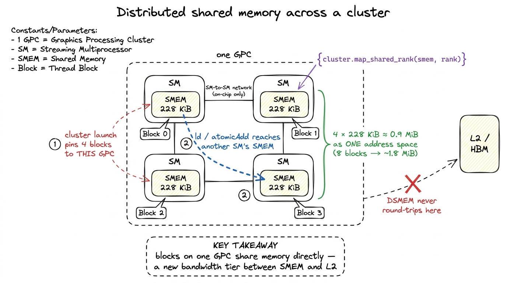
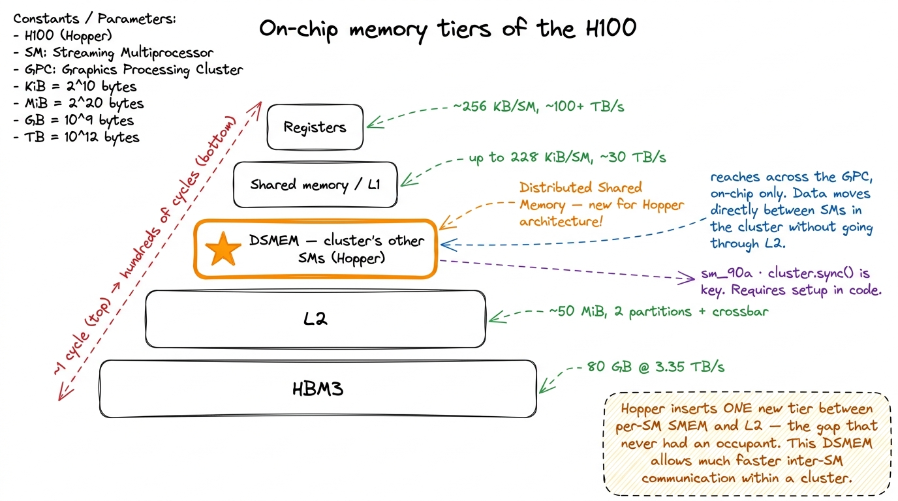
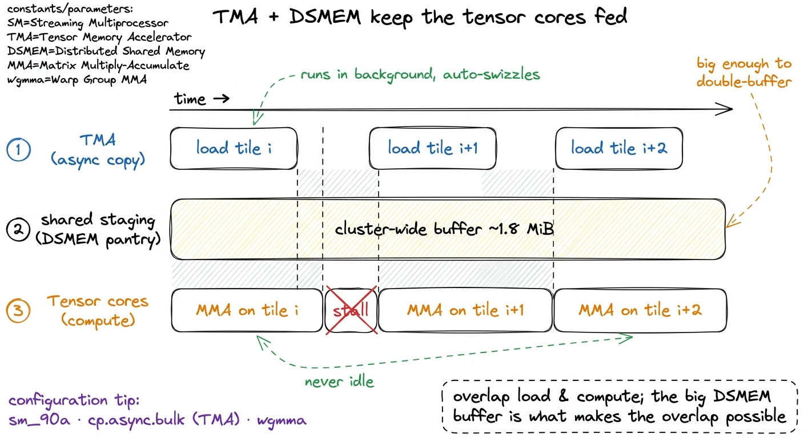

GPCs, TPCs & the chip floorplan GPC
Here is a question that sounds too simple to be worth asking, but that quietly decides how fast almost every kernel you ever write will run: when you launch a grid of thread blocks on an H100, where do they actually go?
Not "the GPU." That is the marketing answer. The real answer is that each block lands on a specific physical tile of silicon, next to other tiles, wired into specific memory controllers, with specific neighbors it can and cannot talk to. And "an H100" is not a single thing either — it is a floorplan, an arrangement of compute tiles on a roughly 800 mm² slab of silicon, with a scheduling hierarchy bolted on top that your launches inherit whether you asked for it or not.
This article is the map. We are going to start from nothing — no assumptions about what an SM is, no CUDA background beyond "a kernel is a grid of blocks of threads" — and walk from the whole die down to a single Streaming Multiprocessor (SM), naming every box on the way. And because this is Hopper (the H100's architecture), we will find one genuinely new rung on the ladder that almost every tutorial skips: the thread-block cluster, the feature that finally lets blocks running on different SMs share memory directly.
I want the map first, before any kernel, for a blunt reason: almost every performance decision later is really a decision about where on this floorplan your data lives and which tiles can see it. Memory coalescing is about the controllers at the bottom of the floorplan. Occupancy is about how many blocks physically fit on one SM. And distributed shared memory — the thing we build toward here — is about which SMs sit close enough on the die to whisper to each other without shouting all the way out to main memory. You cannot exploit locality you cannot name. So let us learn the names.
The one mental model: a chip is a city, not a CPU
Before any acronyms, hold one picture in your head, because we will reuse it the whole way down.
A CPU is like a handful of very fast, very general workers sitting at one big desk. A GPU is a city. It has districts, and each district has neighborhoods, and each neighborhood has a few identical workshops, and inside each workshop are hundreds of tiny workers who all do the exact same step at the exact same moment. The whole design philosophy is: don't make one worker fast, make a hundred thousand mediocre workers move in lockstep.
The reason this matters for us is that a city has geography. Two workshops in the same neighborhood can hand a note across the alley. Two workshops on opposite ends of the city have to mail it through the central post office — slow, and everyone else is using the post office too. Every optimization in GPU programming, at bottom, is about keeping your work inside a small district so your data never has to visit the post office.
 figure rendering · The mental model we reuse throughout: the die is a city of districts (
figure rendering · The mental model we reuse throughout: the die is a city of districts (Now let us put real names on the districts, neighborhoods, and workshops.
The die, top-down: 8 GPCs
Start at the very top. A full GH100 die — the silicon that becomes an H100 — is organized into 8 GPCs.
A GPC is a Graphics Processing Cluster, though NVIDIA now quietly re-expands the acronym to GPU Processing Cluster, since almost nobody runs actual graphics on a datacenter H100.1 The rename is a small tell about what these chips are really for. The "Graphics" lineage is still physically present — each GPC contains a raster engine, the fixed-function hardware that turns triangles into pixels — but on a fleet of H100s grinding through LLM training, that raster engine will sit unused for the entire life of the chip. The GPC is the largest repeating tile on the chip — the district in our city.
Each GPC holds about 18 SMs. That gives the full die its headline figure:
8 GPCs × 18 SMs = 144 SMs on a full GH100.
Here is the first place to stop and question the obvious. You have launched kernels on an H100. Have you ever run on 144 SMs? No — because that part does not ship. The chip you actually rent has 132 SMs on the SXM5 module, or 114 SMs on the PCIe card. Same die. Fewer SMs turned on.
Why would NVIDIA sell you a chip with pieces switched off? The answer is yield, and it is worth understanding because it explains a number you will otherwise be tempted to hardcode and regret.
An SM is a large, dense block of logic — hundreds of thousands of transistors and several kilobytes of SRAM. Across a silicon wafer, some fraction of these blocks come out flawed: a stuck transistor here, a bad memory cell there. Defects are random and roughly uniform across the wafer. Now do the napkin math. If NVIDIA required all 144 SMs to be perfect, then a single defective SM anywhere on that ~800 mm² die would force them to throw the whole die away. On a big die, the probability that all 144 blocks are flawless is low — so most dies would be scrap, and the price of a working H100 (already brutal) would be far worse.
So instead they design for it. Defective or partially defective SMs are fused off — permanently disabled with a tiny on-chip fuse blown during manufacturing test — and the chip is binned and sold with a guaranteed-good SM count. 132 is simply the number they can hit at volume, with margin: enough good dies clear that bar to fill the fleet.2 The 114-SM PCIe part is not just "132 minus some SMs." It also clocks lower and has a smaller power and thermal budget, because a PCIe slot delivers less power than an SXM mezzanine socket wired into an HGX baseboard. So the two products differ in more than SM count — which is exactly why you should treat the count as a runtime fact, not a constant.
3 Never hardcode 132 in a kernel. Query cudaDeviceProp::multiProcessorCount at runtime and size your grid from that. The same compiled binary might land on a 132-SM SXM5, a 114-SM PCIe H100, or a partially-fused H800 export part — and a grid sized to the wrong SM count leaves whole tiles idle while others double up.
 figure rendering · The GH100 floorplan: 8 GPCs, ~18 SMs each, 144 on the die but 132/114
figure rendering · The GH100 floorplan: 8 GPCs, ~18 SMs each, 144 on the die but 132/114 The middle rung nobody talks about: the TPC
Between the GPC (district) and the SM (workshop) there is one more box, and it is the one people forget: the TPC, the Texture Processing Cluster — the neighborhood in our city.
A GPC is not a flat bag of 18 SMs. It is a raster engine plus a set of TPCs, and each TPC is a pod of exactly 2 adjacent SMs. So the true hierarchy is four levels deep:
die → GPC → TPC → SM
and the 18 SMs per GPC arrive as 9 TPCs of 2 SMs each. (9 × 2 = 18. The math is meant to be that boring — that is the whole point of the next paragraph.)
Now, the honest question: do you, writing a GEMM kernel, ever address a TPC? For most of GPU history, no. There is no tpcIdx in the programming model; you will never write one. The name gives away why the pairing exists at all — two SMs were bundled together to share fixed-function texture and raster hardware from the graphics era, hardware your matrix multiply never touches. So for a pure compute programmer the TPC has long been almost invisible.
But it is worth knowing for two honest reasons, and one surprising recent twist.
First, the TPC is why the SM count per GPC is even. SMs are physically packaged two-to-a-pod, so a GPC gets 18, not 17. Little facts like "144" and "132" ultimately trace back to this pairing.
Second, it is a reminder of what these chips really are: a graphics GPU wearing a lab coat. The raster engines and the TPC packaging are still there on the datacenter part, faithfully carried over, even though nearly every H100 ever made will spend its whole life multiplying matrices and never draw a single triangle.
And the twist — the reason to actually remember the TPC now. On Hopper the TPC is invisible to your code, but on Blackwell (the generation after Hopper) that changed. Blackwell's fifth-generation tensor cores introduced a "CTA pair" level into the PTX thread hierarchy that maps directly onto the TPC's two SMs.4 Concretely, Blackwell PTX gained a .cta_group qualifier on its matrix-multiply instructions, with 1SM and 2SM variants. The 2SM form runs a single tensor-core operation cooperatively across both SMs of one TPC — turning that old graphics-era pairing into an addressable compute unit for the first time. So the "useless historical box" quietly became load-bearing one generation later. The box you never had to think about became a programmable unit. Knowing it exists on Hopper is what makes that Blackwell feature legible instead of magic.
 figure rendering · The four-level hierarchy zoomed one box at a time. The TPC is the pod
figure rendering · The four-level hierarchy zoomed one box at a time. The TPC is the pod Why the floorplan was invisible — and why that's a waste
Let us pause and appreciate a genuine limitation, because the whole rest of the article is about lifting it.
For every GPU generation before Hopper, this hierarchy was completely invisible to your code above the level of the SM. You wrote a grid of thread blocks. The hardware scheduler sprayed those blocks across whatever SMs happened to be free, in no order you could rely on. And critically: a block's shared memory was private to its one SM. Full stop.
Think about what that costs, in our city picture. Two of your blocks might land on adjacent SMs inside the same TPC — two workshops in the same neighborhood, physically millimeters apart on the die. And yet, if block A wanted to hand block B a value, it could not slide the note across the alley. It had to write the value all the way out to global memory (the central post office, hundreds of cycles away, shared by every block on the chip), and block B had to read it back. A round trip across the entire city to talk to a neighbor.
The GPC was a real fact of the silicon — the blocks were physically close — but your program was structurally forbidden from using that closeness. All that geography, and no way to exploit it.
 figure rendering · The core before/after: two blocks on the same GPC. Pre-Hopper they had
figure rendering · The core before/after: two blocks on the same GPC. Pre-Hopper they hadThe new rung: thread-block clusters
Hopper (compute capability 9.0, which you target as sm_90a in nvcc) adds the missing rung: the thread-block cluster.
Here is the whole idea in one sentence. A cluster is a new, optional level of the launch hierarchy that sits between the grid and the block: you declare that some group of thread blocks — up to 16 of them — form a cluster, and the runtime guarantees that all blocks of one cluster are co-scheduled onto the same GPC.
That single scheduling promise is what makes the GPC addressable for the first time. And notice — it is exactly analogous to a guarantee you already rely on one level down. You already trust that all the threads of one block share one SM (that is why they can share that SM's shared memory and sync with __syncthreads()). A cluster extends the same style of promise up a level: its blocks share one GPC.5 The portable maximum is 8 blocks per cluster — that size is guaranteed to work on any compute-9.0 device. Sizes up to 16 are supported but non-portable: you must opt in, and the launch can be rejected on a device or occupancy configuration that cannot honor it. Treat >8 as an optimization you fall back from, not a baseline.
Here is the launch, expressed as a compile-time cluster attribute on the kernel:
// A 2x2 = 4-block cluster. All 4 blocks are guaranteed
// to co-reside on ONE GPC, so they can share memory directly.
__global__ void __cluster_dims__(2, 2, 1)
gemm_cluster(const float* A, const float* B, float* C) {
namespace cg = cooperative_groups;
cg::cluster_group cluster = cg::this_cluster();
// this block's coordinates *within* the cluster:
unsigned int rank = cluster.block_rank();
// ... map a large output tile across the whole cluster ...
cluster.sync(); // barrier across all blocks in the GPC
}Read that cluster.sync() on the last line and pause. Before Hopper there was no such thing — there was no barrier that spanned multiple SMs, because there was no guarantee multiple blocks were even near each other. That one call is the visible tip of the whole feature: a synchronization primitive whose existence depends on the co-scheduling promise. The blocks can wait for each other because the hardware swore they'd be neighbors.
Distributed shared memory: reading another SM's scratchpad
The co-scheduling guarantee is the setup. The payoff is DSMEM, Distributed Shared Memory — and this is the part worth slowing down for, because it is the first time in GPU history that on-chip scratchpad stops being strictly per-SM.
First, recall the piece we are extending. Each SM has a small, fast on-chip scratchpad — shared memory (SMEM). It is carved out of the same 256 KiB SRAM block that also holds the L1 cache, and you can dedicate up to 228 KiB of that block to shared memory.6 The 228 KiB is the usable-as-SMEM ceiling, opted into via cudaFuncAttributePreferredSharedMemoryCarveout; the exact number shifts slightly by architecture, and whatever you don't claim for SMEM stays as L1 cache. The full physical block is 256 KiB of combined SMEM + L1. See the shared memory & L1 article for the carveout mechanics. It is roughly a hundred times faster to reach than global memory. That scratchpad is the workshop's private workbench — and historically, private was the operative word.
DSMEM breaks the "private" part. Once your blocks are pinned to one GPC by a cluster launch, Hopper exposes the shared-memory windows of every SM in the cluster as one contiguous, cluster-wide address space. A thread in block 0 can issue a load — or an atomicAdd — whose address resolves into the shared memory physically owned by block 3's SM. The hardware routes that request over a dedicated SM-to-SM network inside the GPC. It never touches L2. It never touches HBM. The note slides across the alley.
Let us make the payoff concrete with the same napkin math we've been doing. One SM gives you up to 228 KiB of scratchpad. But a cluster of, say, 8 blocks (one block per SM) now lets a single collective operation reach across:
8 blocks × 228 KiB ≈ 1.8 MiB of shared memory, addressed as one logical scratchpad.
That is roughly an order of magnitude more fast on-chip working set than any single SM can hold — and you reach it at latency far closer to SMEM than to L2. For an algorithm that has data to reuse across blocks, that is enormous: it means a working set that used to spill to L2 (or worse, to HBM) can now stay entirely on-chip, spread across a neighborhood of SMs.

figure rendering · Thread-block clusters unlock DSMEM: the shared memory of every SM in aWhere DSMEM sits on the memory ladder
It helps to place this new tier on the ladder we already know, because its whole value is that it fills a gap that did not exist before.
Work outward from a single thread:
- Registers — private to the thread, ~256 KB per SM total, effectively instant (bandwidth on the order of 100+ TB/s per SM).
- Shared memory / L1 — per-SM, up to 228 KiB, on the order of ~30 TB/s, a handful of cycles away.
- DSMEM (new in Hopper) — the shared memory of your cluster's other SMs, reached over the SM-to-SM fabric. Slower than your own SMEM, but still fully on-chip.
- L2 cache — shared by the whole GPU, roughly 50 MiB, split into two partitions joined by a crossbar.
- HBM3 — global memory, 80 GB at 3.35 TB/s, but hundreds of cycles of latency away. The post office.
DSMEM slots into rung 3, into a gap that simply had no occupant before Hopper: bigger than one SM's scratchpad, dramatically faster and lower-energy than bouncing through L2 or HBM. In our city, it is the difference between borrowing a tool from the workshop next door versus mailing a request downtown.

figure rendering · Where DSMEM lands. It is faster and larger-reaching than any single SMWhy this actually matters for GEMM: feeding the tensor cores
So far this could sound like a neat capability with no customer. Let us close that gap, because there is a very hungry customer: the tensor cores.
Here is the tension that drives all of modern GEMM kernel engineering. An H100's tensor cores can multiply matrices absurdly fast — so fast that the hard problem is no longer doing the math, it is feeding the math. If the tensor cores ever stall waiting for their next tile of operands to arrive from memory, you are burning the most expensive silicon on the chip doing nothing. The entire GEMM ladder — the sequence of kernel optimizations that carries a from-scratch matrix multiply from single-digit percentages of cuBLAS up toward parity — is, viewed correctly, one long war to keep operands flowing so the tensor cores never go idle.7 For the full worklog of that ladder — naive at 4.2 TFLOP/s (~8.2% of cuBLAS), through shared-memory tiling, 1D and 2D register tiling, float4 vectorized loads reaching about 72% of cuBLAS, warp tiling, and finally tensor cores — see Hamza Elshafie's excellent H100 GEMM worklog, the reference these articles are built on.
Two Hopper features fight that war together, and they are made for each other:
- TMA — the Tensor Memory Accelerator — is a dedicated hardware unit that performs big, asynchronous bulk copies from global memory into shared memory. You hand it a descriptor ("copy this 2D tile") and it streams the data in the background while your compute keeps running, and it even swizzles the data automatically to avoid shared-memory bank conflicts — a chore kernel authors used to do by hand.8 "Asynchronous" is the load-bearing word. TMA copies overlap with computation: while the tensor cores chew on tile i, TMA is already pulling tile i+1 into a staging buffer. This producer/consumer overlap (often double- or multi-buffered) is what keeps the pipeline full — and it is exactly the pattern that wants a large shared staging area to buffer into.
- Clusters + DSMEM — give you that large shared staging area, spread across a neighborhood of SMs, so multiple blocks can cooperate on one big output tile and reuse each other's staged operands directly rather than each re-fetching from global memory.
Put them together and the picture snaps into focus: TMA streams operands in asynchronously, DSMEM gives the whole cluster a big shared pantry to stream them into, and the tensor cores eat continuously without ever visiting the post office. This is not a toy pattern. cuBLAS itself — NVIDIA's own production GEMM library — is a heavy user of cluster launches on Hopper for exactly this reason, and it is a major part of how the top rungs of the ladder climb from the mid-80s into the low-90s percent of cuBLAS and beyond. The floorplan we mapped is the substrate all of that stands on.

figure rendering · The producer/consumer pipeline. TMA asynchronously streams tiles intoThe number, and the honest caveats
So what does the floorplan actually buy you? Unlike a single kernel optimization, a cluster is not a "+X% of cuBLAS" step — it is a structural capability that other optimizations stand on. The number worth carrying is the reach: a cluster turns 228 KiB of private per-SM scratchpad into a shared on-chip working set approaching ~1.8 MiB across a full 8-block cluster, with zero HBM round-trips. That is the lever the top of the GEMM ladder pulls to keep the tensor cores fed.
Now the honest caveats, because none of this is free or automatic, and pretending otherwise would set you up to be burned:
- A cluster launch can fail. If the requested block count cannot be co-scheduled on one GPC given the current occupancy (too many registers or too much SMEM per block leaves no room for the whole cluster), the launch is rejected. You must query the achievable size with
cudaOccupancyMaxActiveClustersand be ready to fall back to a smaller cluster — or to no cluster at all. - Sizes above 8 are non-portable. Design your baseline around 8, treat 16 as a bonus you can lose.
- DSMEM only helps if you have cross-block reuse to exploit. Bolt a cluster onto a kernel whose blocks share no data and you have added synchronization and complexity for exactly nothing — possibly making it slower. The feature pays off only when block A genuinely wants to read what block B staged.
- It is not magic locality. Reaching another SM's SMEM over the SM-to-SM network is slower than reaching your own. DSMEM is a real tier between local SMEM and L2 — treat it as such, not as free extra local memory.
The map, and where we go next
That is the floorplan, from the whole city down to a workshop:
- The die is 8 GPCs (districts), each of 9 TPCs (neighborhoods), each of 2 SMs (workshops) —
8 × 9 × 2 = 144SMs on a full GH100. - The 132 SMs you actually run on are that same 144-SM die with the defective ones fused off for yield — so query the count, never hardcode it.
- The TPC is a graphics-era pod of two SMs you don't address on Hopper — but remember it, because Blackwell's
.cta_group 2SMturns it into a real compute unit. - Hopper's thread-block cluster finally makes the GPC programmable: co-schedule up to 16 blocks onto one GPC and share their scratchpads as DSMEM, a new on-chip memory tier — the substrate that TMA-fed, tensor-core GEMM kernels stand on in production today.
Everything above the SM only pays off once you know what happens inside one. So next we drop through the workshop door into a single SM — its four processing blocks, the warp schedulers that issue instructions, the tensor cores that do the heavy math, and the register file that feeds them all. That is where a cycle actually gets spent, and where the rest of this course lives.